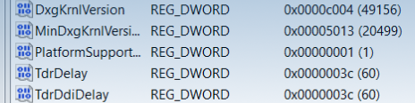
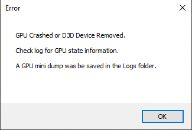
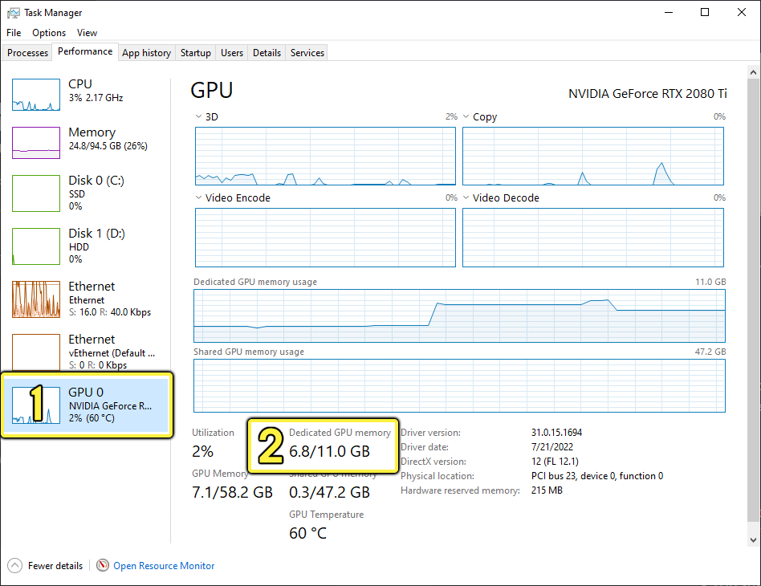
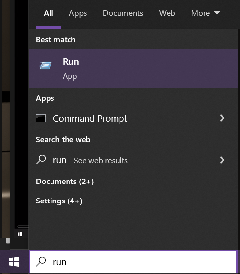
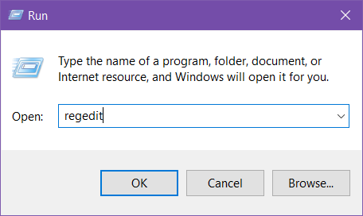
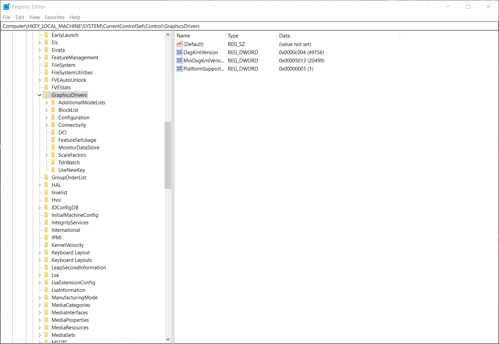
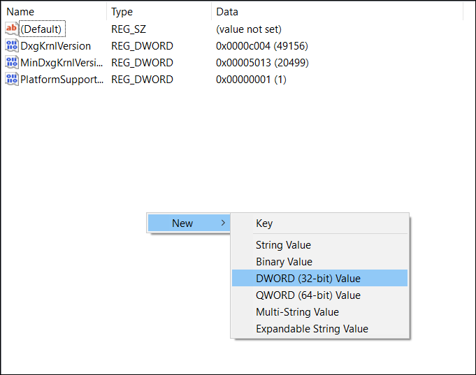
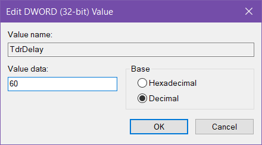
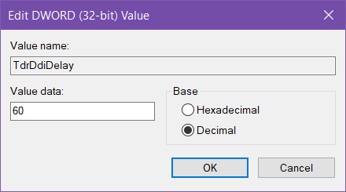
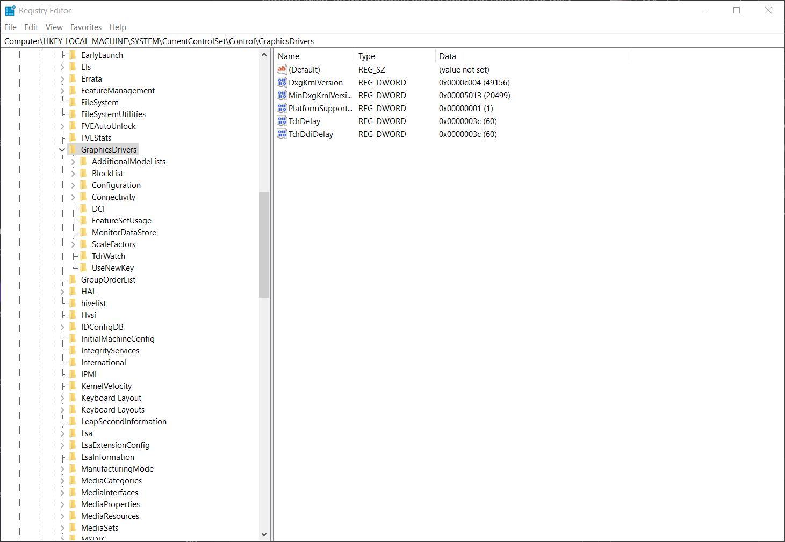

Если в Unreal Engine произошел сбой, для начала можно изучить стек вызовов, сгенерированный Crash Reporter, и файлы журналов, которые содержат информацию, помогающую понять, что произошло. Однако при сбое графического процессора стек вызовов центрального процессора не указывает непосредственно на причину сбоя, а лишь показывает, что делал центральный процессор в момент сбоя графического процессора. Таким образом, он не дает никакой полезной информации.
Информация на этой странице поможет вам:
Существует два типа ошибок, которые обычно называют сбоями в работе графического процессора:
При обнаружении сбоя графического процессора движок завершает работу и выводит диалоговое окно, подобное этому:

Если подключен отладчик, ошибка фиксируется до его закрытия. В журнале будет указана ошибка, подобная этой:
Сбой в работе функции и расположение источника сбоя могут быть разными, даже если причина одна и та же. При расследовании причин сбоя графического процессора стек вызовов центрального процессора, в котором обнаружена ошибка, не имеет значения, поскольку информация о сбоях поступает в приложение асинхронно.
Важно отличать ошибки, связанные с удалением устройства, от других ошибок D3D, поскольку они могут возникать в одном и том же месте в коде центрального процессора, но методы их устранения различаются. Например, функция VerifyD3D12Results() часто перехватывает оба типа ошибок, и для определения дальнейших действий необходимо изучить код ошибки. При сбоях графического процессора выводится код DXGI_ERROR_DEVICE_REMOVED, в то время как при других проблемах выводятся другие коды, например E_INVALIDARG_E_ACCESSDENIED или E_OUTOFMEMORY.
Вот пример того, что не является сбоем графического процессора:
Этот конкретный сбой вызван передачей неверных аргументов в вызов D3D API, и его необходимо отлаживать другим способом. См. раздел «Понимание и устранение проблем с таймаутами графического процессора» ниже.
На практике сбои графического процессора могут происходить по нескольким причинам:
Вот несколько рекомендаций, которые помогут вам предоставить как можно больше информации команде по рендерингу при сообщении о сбое в работе графического процессора:
Драйверы графических процессоров стали очень сложными, а значит, ошибки и проблемы встречаются чаще.
Если у вас произошел сбой графического процессора на вашем компьютере, сначала убедитесь, что у вас установлены последние доступные драйверы от производителя графического процессора. Если вы исследуете сбой графического процессора, произошедший на другом компьютере, в журнале движка будет указана версия и дата установки драйвера, как в следующем примере:
Просмотрев журнал, вы захотите узнать причину, указанную в сообщении об ошибке. Обратите внимание, что это не связано с кодом ошибки, например DXGI_ERROR_DEVICE_REMOVED . Если причина указана как DXGI_ERROR_DEVICE_RESET , то, скорее всего, сбой произошел из-за другого приложения, и вам остается только убедиться, что вы не запускаете другие 3D-приложения одновременно с Unreal Engine. Коды причин не всегда надежны, но в большинстве случаев их все же стоит проверять.
Если журнал и причина сбоя не указывают на другие причины, можно предположить, что сбой вызван ошибкой в контенте или движке. В зависимости от сборки и конфигурации среды выполнения может быть включен определенный уровень ведения журнала отладки при сбоях в работе графического процессора. Посмотрите в конец журнала после сообщения об ошибке «устройство удалено», чтобы узнать, ведется ли журнал отладки.
Что касается сбоев в работе графического процессора при использовании DirectX 11 (DX11), то в большинстве случаев устранить их невозможно. Теоретически ошибки страниц невозможны, поскольку отсутствует явное управление памятью. Если ошибка страниц все же возникает, это происходит из-за ошибки в драйвере. Однако тип сбоя не определяется приложением. Если сбой произошел на графическом процессоре NVIDIA и функция Aftermath включена, вы можете получить файл дампа Aftermath, который можно открыть в инструменте разработчика NVIDIA Nsight Graphics, чтобы узнать, на каком этапе произошел сбой. Для графических процессоров других производителей не существует способа отладки сбоев, а значит, мы не можем ничего предпринять, пока сбой не удастся воспроизвести. В таком случае метод отладки заключается в том, чтобы отключать проходы до тех пор, пока мы не выясним, какой из них вызывает проблему, а затем попытаться понять, как именно этот проход может приводить к зависанию графического процессора.
DirectX 12 (DX12) предоставляет несколько источников отладочной информации. Первый из них — RHI breadcrumbs. С его помощью движок использует WriteBufferImmediate API для отслеживания активных команд на графическом процессоре. При сбое система выводит примерно такой лог:
В этом журнале показаны два прохода/шейдера, запущенных на графическом процессоре. Они отмечены тегами [Active] для GPUDebugCrash_DirectQueue_Hang и ClearCPUMessageBuffer . Необходимо изучить эти шейдеры, чтобы определить, какой из них вызвал зависание.
В данном конкретном случае проблема заключается в параметре GPUDebugCrash_DirectQueue_Hang pass. Он был добавлен с помощью консольной команды GPUDebugCrash hang, которая используется для намеренного сбоя с целью проверки работоспособности отладочного кода.
Следующий источник — DRED, то есть расширенный API данных об удаленных устройствах от Microsoft. Он использует механизм, схожий с «хлебными крошками» RHI, но также может сообщать об адресе ошибки страницы при возникновении такого типа ошибки. Информация DRED не иерархическая, она просто содержит список событий в списке активных команд, как в примере ниже:
Маркер LAST COMPLETED указывает на последнюю команду, выполненную на графическом процессоре. Все, что было выполнено после этого, может выполняться в данный момент, и это нужно проверить. В отличие от «хлебных крошек» RHI, нет простого способа отличить активные команды от тех, которые еще не запущены.
В DRED есть два режима: облегченный и полный. В облегченном режиме используются только маркеры, отправляемые движком, — тот же источник информации, что и в «хлебных крошках» RHI. В полном режиме автоматически добавляется маркер для каждой команды рендеринга, такой как Draw, Dispatch, Barrier и т. д., а также используются маркеры движка. Полный режим предоставляет больше информации, но значительно снижает производительность графического процессора. Облегченного режима обычно достаточно для выявления проблем.
Если включена переменная консоли D3D12.TrackAllAllocations, RHI отслеживает диапазоны адресов активных ресурсов, а также освобожденных ресурсов за последние 100 кадров. DRED также хранит аналогичную информацию (независимо от этой переменной консоли). При возникновении ошибки страничной памяти адрес ошибки сравнивается со списком диапазонов, чтобы мы могли определить, к какому ресурсу осуществлялся доступ в этот момент. Ниже приведен пример вывода из «хлебных крошек» RHI:
В случае с этим журналом ресурс был активен, поэтому возможные причины сбоя следующие:
Пример вывода данных из DRED:
В данном случае ошибка возникает внутри недавно освобожденного ресурса. Проблема в том, что ресурс был освобожден, когда на нем еще выполнялась работа с использованием графического процессора.
Наконец, мы можем извлечь информацию из Aftermath, если сбой произошел на графическом процессоре NVIDIA. Aftermath сообщает о типе сбоя (тайм-аут или ошибка страничной памяти), а также о проходе, вызвавшем ошибку. Извлеченная из Aftermath информация в этом случае представлена в иерархическом виде — по аналогии с «хлебными крошками» RHI — и показывает путь в иерархии проходов сцены:
Aftermath создает файл дампа сбоя графического процессора в формате DX11, который можно открыть в Nsight. Nsight может показать место в исходном коде, где возникла проблема, если в шейдере, вызвавшем сбой, была включена отладочная информация.
Эти функции отладки управляются с помощью следующих аргументов командной строки и переменных консоли:
Флаги командной строки для каждой функции принимают необязательный аргумент =0 или =1, чтобы явно указать состояние функции. Использование только флага включает функцию, что эквивалентно =1. Аргументы командной строки имеют приоритет над переменными консоли.
Флаги для включения и выключения всех функций можно комбинировать с другими флагами, чтобы включать или исключать определенные возможности. Например, при использовании -gpucrashdebugging -gpubreadcrumbs=0 будут включены все функции, кроме навигационной цепочки RHI, а при использовании nogpucrashdebugging -dred — только полная версия DRED, а все остальное будет отключено.
При использовании описанных выше функций отладки следует учитывать следующие факторы, влияющие на производительность:
Эти настройки по умолчанию можно изменить для каждого проекта.
Если в графическом процессоре заканчивается память, это может привести к сбою. Это во многом зависит от используемого RHI: некоторые из них более устойчивы, чем другие, и в случае нехватки памяти могут работать медленнее, но не зависать.
Чтобы понять, почему произошел сбой из-за нехватки памяти, откройте Диспетчер задач Windows и перейдите на вкладку Производительность. Здесь вы можете выбрать свой графический процессор (1) и посмотреть, сколько памяти у него доступно и сколько он использует в данный момент (2).

Если ваш проект открыт и запущен, вы можете видеть, сколько памяти графического процессора используется и сколько доступно. Если вы близки к пределу доступной памяти, скорее всего, именно это и является причиной сбоя. В этом случае попробуйте сделать следующее:
Когда центральный процессор отправляет графическому процессору команду на выполнение какого-либо вычисления, он устанавливает таймер, чтобы засечь время, необходимое графическому процессору для завершения операции. Если центральный процессор обнаруживает, что операция занимает слишком много времени (по умолчанию в Windows это две секунды), он сбрасывает драйвер, что приводит к сбою графического процессора. Это называется событием TDR (от англ. Timeout Detection and Recovery — обнаружение и восстановление при превышении времени ожидания).
В идеале движок не должен отправлять на графический процессор такой объем работы, который приводит к возникновению события TDR. Вместо этого движок должен разбивать задачу на более мелкие части, чтобы избежать TDR. Чтобы избежать подобных событий, можно увеличить время ожидания, отредактировав реестр Windows (см. приведенные ниже инструкции по разрешению событий TDR).
Аппаратная трассировка лучей требует больших затрат и с большей вероятностью приводит к событиям TDR, если она включена. Некоторые дорогостоящие проходы трассировки лучей (например, глобальное освещение при трассировке лучей в очень высоком разрешении) могут занимать много времени и приводить к событиям TDR.
Самые ресурсоёмкие проходы трассировки лучей (глобальное освещение и отражения) позволяют рендерить проходы по частям, а не за один проход, с помощью следующих переменных консоли:
Если размер тайла в проходе больше 0, то эти проходы рендерятся в виде тайлов размером N x N пикселей, где каждый тайл представлен отдельным буфером команд для графического процессора. Это обеспечивает высокое качество рендеринга без превышения времени ожидания.
Один из способов избежать проблем с TDR — увеличить время, необходимое Windows для их возникновения, отредактировав разделы реестра Windows. В этом руководстве вы узнаете, как создать два новых раздела реестра: TdrDelay и TdrDiDelay.
Чтобы узнать больше о разделах реестра, обратитесь к документации Microsoft по Tdr разделам реестра.
Изменение ключей реестра в операционной системе Windows может привести к неожиданным последствиям и потребовать полной переустановки Windows. Хотя добавление или изменение ключей реестра, описанных в этом руководстве, не должно привести к таким последствиям, мы рекомендуем сделать резервную копию системы перед началом работы. Epic Games не несет ответственности за любой ущерб, причиненный вашей системе в результате изменения системного реестра.
Вам нужно добавить два раздела реестра в графические драйверы. Чтобы добавить разделы реестра, выполните следующие действия.



Ключи реестра нужно добавлять в папку GraphicsDrivers, а не в ее дочерние папки. Убедитесь, что выбрали правильную папку.




После добавления этих ключей реестра Windows будет ждать 60 секунд, прежде чем определить, что процесс в приложении выполняется слишком долго.
Хотя это хороший способ предотвратить сбои в работе графического процессора при рендеринге, он не избавит вас от всех проблем. Если вы попытаетесь обработать слишком большой объем данных за раз, графический процессор может выйти из строя независимо от того, насколько большую задержку вы установите. Это решение лишь дает вашей видеокарте немного дополнительного времени.